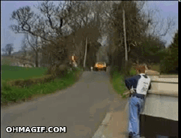

Statistiques

30%
des piétons sont morts sur un passage piétons
559
piétons morts en 2016
9%
des piétons tués sont sur un accotement ou une bande d'arrêt d'urgence
8
ème position de la France dans la sécuité des piétons en ville
32%
des tués sont à plus de 50m d'un passage piéton
7%
des piétons sont morts sur un trottoir